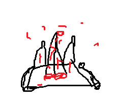

Vous prener la corde et la tirer sur la tour pour la grimper.
une fois en haut, vous voyer 2 garde qui surveille la cage ou il y a le prisonier.
Puis un autre, garde en armur en or les appel pour le rejoindre.
C'est votre chance, vous reprener la corde pour descendre de lautre coté et vous vous precipiter vers la cage.
Vous n'avez rien pour ouvrir la cage donc vous chercher une solution autour.
Sont faire expres vous bousculer la cage et les tete des prisonier tomber, au même moment vous voyer des garde dans la prote d'entrer vous réflicher vite et tirer une double fléche qui transperche la tete des 2 garde.
Vous courer vers la sortie on vous posant des tat de question comme, es que vous arriver trop tard?
au moment de sortir.

"Je suis impresionner, on dirais un vrai sacheur sous cette tenu de poueu, sa doit bien etre toi le héro."
Vous reconaiser la voie de la femme. Pourquoi elle vous a transpercer? aucun mot n'arrive a sortir de votre bouche.
"dommage que je doit te tuer, tu aurais ramener d'exelent gibier."
"Bon j'espere que le roi va bien me payer cette fois si."